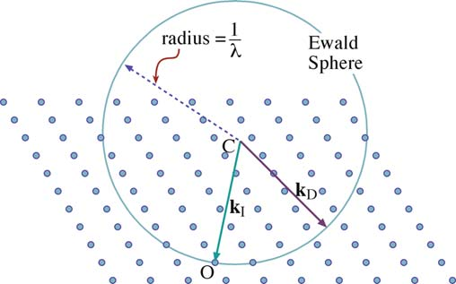

电子衍射
电子衍射原理
布拉格定律
Bragg's Law
干涉指数\(d_{nhnknl}=\frac{d_hkl}{n}\)
\(\lambda\le2d\) 时才产生Bragg衍射
能产生Bragg衍射的晶面几乎平行于入射束
倒易点阵和Ewald作图
倒易点阵固物X光都讲过了，不说了（

结构因子
入射波被两个点散射，两散射波的光程差
电子束受到单胞散射的合成振幅
代入衍射条件\(K_g-K_0=g\)，\(g\)为倒空间点阵矢量，\(r_j\)是为正空间点阵矢量
衍射强度正比于振幅平方，F=0意味着消光
（推导不写了）
消光
- FCC：只有全奇全偶有振幅，其余全消光
- BCC：hkl和为偶数有振幅，奇数消光
干涉函数
（X光课上好像管这个叫劳埃函数）
真实晶体大小有限且内部有缺陷，因此倒易点有一定大小，使得产生电子衍射的可能性增加
取一个柱晶（z方向上堆叠），所有单胞的合成振幅：
若满足了布拉格条件，则所有单胞具有相同位相，\(A=N_zF\)
若衍射方向有偏离：\(K_g-K_0=g+s\)
后面一坨就是干涉函数了，其主极大值两边的零点决定了相干散射的范围
晶体越薄，参加相干散射的单胞越少，倒易点的拉长越多，与Ewald球的相切机会越大
（三维的不说了，叠一遍就行
衍射花样与晶体几何关系

近似公式\(rd=L\lambda\)，一般\(L\lambda\)已知（仪器常数），可以用来求d
倒易点阵平面及其画法
晶带定律
晶带：与一个晶体学方向[uvw]平行的一组晶面族的总称，[uvw]方向称为晶带轴
晶带中晶面族的倒格矢垂直于晶带轴\(hu+kv+lw=0\)
二维倒易点阵平面画法
已知晶体结构，画\((uvw)^*\)倒易面
- 先蒙两个低指数的
- 求和，画个平行四边形，再往外扩展（立方晶系的话最好优先找直角）
- 除去消光的点
- 查查有没有漏掉的
选区电子衍射
多晶电子衍射花样和相机长度标定
参考X光，多晶的衍射花样是一系列同心圆环。重要公式：
对同一衍射花样，\(L\lambda\)是定值，故
立方晶系
FCC
| 111 | 200 | 220 | 311 | 222 | 400 | 331 | 422 | ... |
|---|---|---|---|---|---|---|---|---|
| 3 | 4 | 8 | 11 | 12 | 16 | 19 | 20 | ... |
BCC
| 110 | 200 | 211 | 220 | 310 | 222 | 321 | ... |
|---|---|---|---|---|---|---|---|
| 2 | 4 | 6 | 8 | 10 | 12 | 14 | ... |
SC
| 100 | 110 | 111 | 200 | 210 | 211 | 220 | ... |
|---|---|---|---|---|---|---|---|
| 1 | 2 | 3 | 4 | 5 | 6 | 8 | ... |
金刚石：3、8、11、16、19、24...
四方晶系
取\(M=h^2+k^2\)，对\(l=0\)的衍射环
六方晶系
令\(P=h^2+hk+k^2\)，对l=0
多晶花样标定步骤
- 利用已知样品，确定仪器常数\(L\lambda\)
- 测定衍射环半径（为减小误差可以先测直径再转成半径）
- 计算\(r^2\)，分析规律，得出N值（若为立方晶系）
- 根据晶体结构标定各衍射环的指数，并从ASTM卡片中找出对应的晶面间距
- \(r_id_i=L\lambda\)，计算出仪器常数，取平均值
- 已知仪器常数，根据衍射花样，确定样品的晶体对称性
- 测衍射环半径
- 计算\(r^2\)，分析规律，估计晶体结构或点阵
- \(r_id_i=L\lambda\)计算\(d_i\)
- 估计各衍射环的相对强度，由三强线的d值查ASTM卡片索引，最终确定物相
常用标准样品有TlCl、Au、Al等，可以真空蒸发沉积得到细小多晶薄膜
单晶电子衍射花样
只有在倒易原点\(O^*\)附近，与Ewald球相交的那些倒易阵点所代表的晶面满足Bragg定律产生衍射束
零阶劳厄带ZOLZ
晶带[uvw]中所有晶面的倒易阵点或倒易矢量必须都在垂直于[uvw]且过倒易原点\(O^*\)的一个倒易平面内，记作\((uvw)_0^*\)，称为零阶劳厄带
相应的，不过倒易原点的倒易面，即\(hu+kv+lw=N\)的倒易面称为高阶（N阶）劳厄带
单晶电子衍射花样的标定
- 衍射谱相当于一个倒易平面，如电子束的入射方向与晶体[uvw]方向平行，则产生衍射的晶面指数为{hkl}，遵循晶带定律\(hu+kv+lw=0\)
- 根据衍射花样与晶体间的几何关系，各衍射斑点到中央透射斑点O的距离满足\(rd=L\lambda\)
- 两个不同方向的倒易矢量确定一个倒易点阵平面\((uvw)_0^*\)（参考先前的倒易点阵平面画法）
分析包括两类：
- 已知晶体结构，根据衍射花样确定晶体取向
- 对于未知结构，通过衍射花样确定物相
已知结构确定取向
-
看看是不是简单电子衍射谱（满足晶带定律）。如果是，在花样上选3个离中心最近的衍射斑点P1P2P3，和中心构成平行四边形，测量三个点到中心的距离
-
测所选衍射斑点的夹角
-
\(rd=L\lambda\)将距离换成面间距d
-
查ASTM表，确定晶面族
-
试探法选一套指数符合\(h_3k_3l_3=h_1k_1l_1+h_2k_2l_2\)
-
代入晶面夹角公式
核对，一致则说明蒙对了，不对就重来
-
矢量相加法标出其余斑点，用晶带定律进一步核实指数
-
反求出晶带轴指数（叉乘），定义晶带轴指数和入射电子束方向反平行
太**抽象了，建议看课本P88例4.4过一遍流程
未知结构鉴定物相
- 看看是不是简单电子衍射谱（满足晶带定律）。如果是，在花样上选3个离中心最近的衍射斑点P1P2P3，和中心构成平行四边形，测量三个点到中心的距离 ~~和之前一样~~
- 测衍射斑点之间夹角
- \(rd=L\lambda\)将距离换成面间距d
- 根据成分、工艺及其它信息猜物相，并找到ASTM卡片，对照得到{hkl}
- 试探法选指数
- 计算是否夹角相符
- 如果都没问题，说明物相猜对了
- 确定晶带轴
~~这不就是和前面一样吗~~
注意标定的晶带方向具有180°不确定性
能看到单晶衍射谱的原因
- Ewald球半径大（电子波长短），且样品很薄，倒易点拉长成倒易杆，容易同时截到，产生多个衍射斑点
- 电子束有一定发散度
- 薄晶体试样不一定平整
- 加速电压不稳定导致Ewald球半径扫动
衍射花样和晶体几何关系
对称性快速判断晶系：
- 四方点列：四方晶系、立方晶系
- 六角点列：六角、三角、立方晶系
- 六次对称衍射谱：六角、立方晶系
运用排除法等，结合多个角度的衍射谱判断
四方晶系衍射谱标定
M规律：1，2，4，5，8，9，10，13，16，17，18，20……
任意一个M乘2就可以得到另一个允许的M
包含2的因子的反射都是{hk0}形式，可以求点阵常数a，再求出c
规律：
- 不同晶面l指数相同时
通过一系列相减可以得出\({a^*}^2\)
- 不同衍射晶面的M相同时，有
一系列相减可以得到\({c^*}^2\)或\({c^*}^2\)的倍数
- 都不相同时
有时需要查询ASTM卡片
六方晶系衍射谱标定
H的3：1关系，但可能会被l掩盖
（摆了）
其它电子衍射谱
单晶、多晶、非晶
graph LR
单晶斑点--空间旋转-->多晶环-->非晶晕环
织构
（或许可以理解作单晶的有限空间旋转
二次衍射
衍射束作为入射束再次发生衍射，可能导致结构因子为0的地方产生衍射斑点
高阶劳厄带
提供倒空间中的三维信息
菊池线
试样厚度较大且单晶较完整时出现，一系列平行的亮暗线
成因：经过非相干散射失去较少能量的电子随后又受到弹性散射所产生
菊池线对转动非常敏感，相比之下单晶衍射斑点对小范围转动不敏感（几°以内）
用途：精确测定晶体取向，校正样品杆倾转角度，测定偏离矢量s